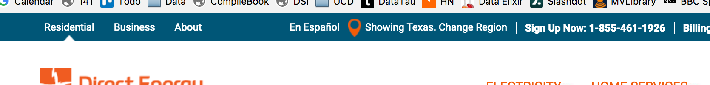
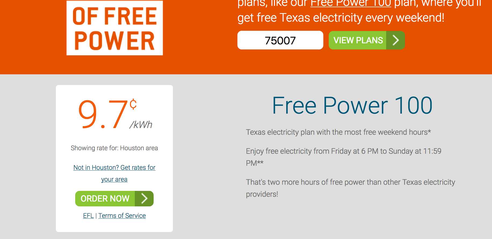
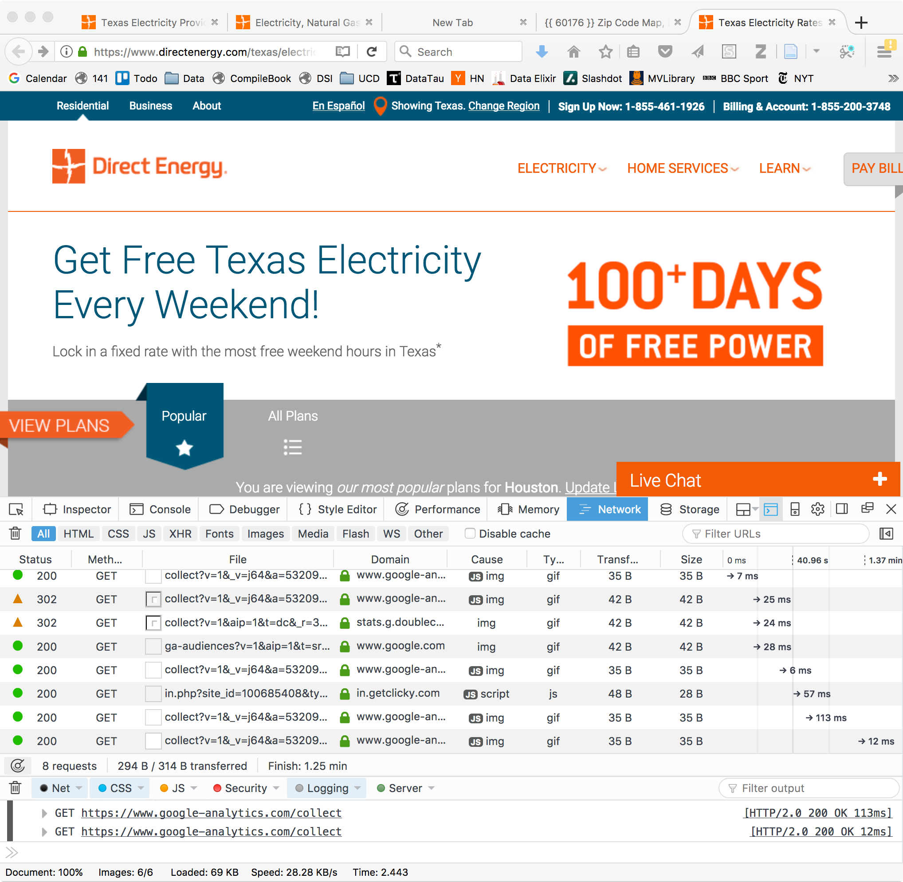
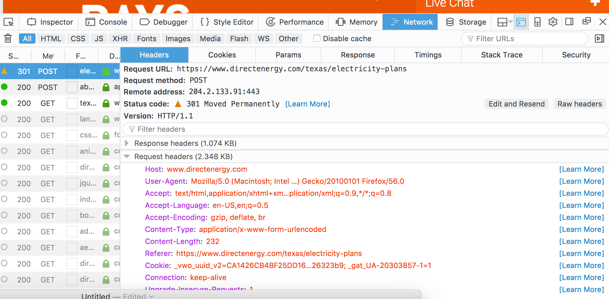
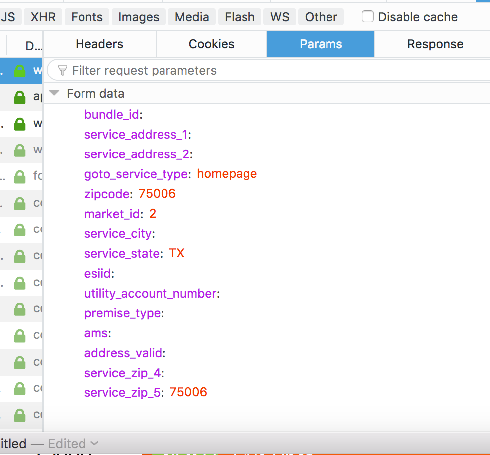

At the very top of the page, there is a discreet
Showing Texas. Change Region

If we click on the Change Region link, we get a popup window
and we can either select a different region in the country
OR specify a ZIP code on the right.
Let's enter 75007 as a sample ZIP code in Texas and then click Go.
This shows the page containing the rate

We want to be able to do this for each ZIP code in Texas, and potentially the other regions also.
Later we'll see that we can remote-control a browser to automate this. However, we don't have to resort to that for this situation.
Let's see what happens when we click Go having entered a ZIP code. We'll look at the network requests the browser makes. We do this using the Developer tools in the browser. We'll use Firefox, but chrome works as well.
In Firefox, click Tools -> Web Developer -> Toggle Tools
This splits the window in half and shows the page you are viewing
and the collection of developer tools.

Select the Network tab. Now enter a ZIP code and click Go. Watch what happens in the Network tab. Each row is a request. We scroll to the top of this table and look at the first request. It says
301 POST electricity-plans
Click on this row and we get

Next, click on the Params tab

This shows the list of variables and their values that were sent in the POST request.
We are going to mimic this request in R, allowing the R user to specify a ZIP code.
library(RCurl) library(XML)We first visit the front page. We'll create a connection and reuse it in all the requests. This is a good thing to do generally as it avoids having to reestablish the connection to the same Web site for each request. More importantly, it allows us to collect cookies and pass them back in each request to maintain state across separate calls. This may be necessary for some interactions.
u = "https://www.directenergy.com/texas/electricity-plans" con = getCurlHandle(followlocation = TRUE, cookiejar = "", verbose = TRUE, useragent = "R") tt = getURLContent(u, curl = con)We specify followlocation so that we follow redirections to other pages (i.e. HTTP 300 codes) and specify an empty cookiejar which tells curl to collect cookies and send them back to the relevant host. We also are good citizens and specify a User-Agent for the HTTP request header . From the Developer tools, we see that we have a POST request with a Content-Type header entry
application/x-www-form-urlencoded; charset=UTF-8The parameters are
bundle_id service_address_1 service_address_2 goto_service_type homepage zipcode 75007 market_id 2 service_city service_state TX esiid utility_account_number premise_type ams address_valid service_zip_4 service_zip_5 75007We mimic this request with
r
u2 = "https://www.directenergy.com/texas/electricity-plans"
ans = postForm(u2,
bundle_id = "",
service_address_1 = "",
service_address_2 = "",
goto_service_type = "homepage",
zipcode = "75007",
market_id = "2",
service_city = "",
service_state = "TX",
esiid = "" ,
utility_account_number = "",
premise_type = "",
ams = "",
address_valid = "",
service_zip_4 = "",
service_zip_5 = "75007",
style = "post", curl = con)
We can check that both 75007 and 9.7 appear in the document's content using grep().
We can also write the content to a file and view it in our browser (although
it may be missing some content that should come from the original server).
In the resulting HTML document, we look for 9.7 or Showing rate for:
to see how the rate is represented in the HTML.
We see
<div id="promoCTA">
<div class="bundle-single-price-wrapper"><div class="bundle-single-price"><span>9.7</span><sup>¢</sup>
<em>/kWh</em>
</div><div class="bundle-single-price-loc">Showing rate for: Houston area</div>
<div class="bundle-single-price-disc">
<a plan-name="Free Power Weekends 12" bid="817" class="noorder" href="#">Not in Houston? Get rates for your area</a></div>
<a plan-name="Free Power Weekends 12" bid="817" data-bundle-id="817" util="3" class="button order" href="#">
<span><b><em>Order now</em></b></span></a></div>
So let's assume this applies to other ZIP code, and perhaps even states.
We look for
div[@id = 'promoCTA']//div[@class = 'bundle-single-price']From the top of the document, the XPath query is
doc = htmlParse(ans, asText = TRUE) node = getNodeSet(doc, "//div[@id = 'promoCTA']//div[@class = 'bundle-single-price']")This returns one node. Let's get the text for this
xmlValue(node[[1]])We may want to get the text from each of the elements separately
xmlSApply(node[[1]], xmlValue) span sup em "9.7" "¢" "/kWh"Let's make a function to get the rate for a given ZIP code in Texas.